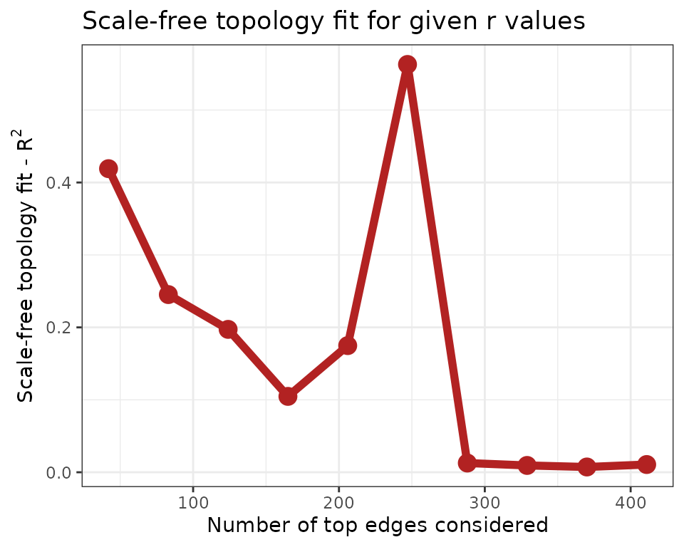
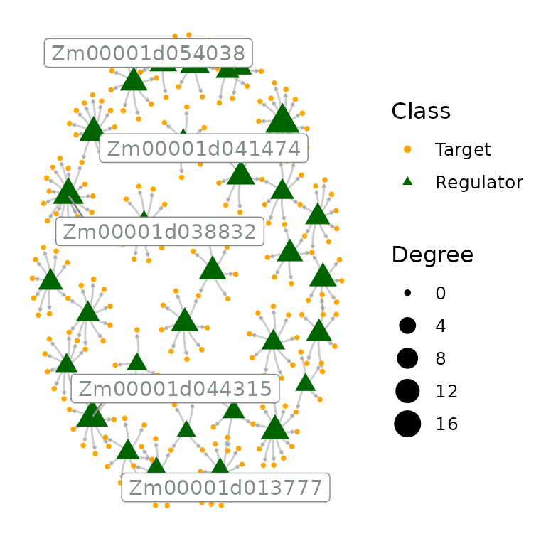

vignettes/vignette_02_GRN_inference.Rmd
vignette_02_GRN_inference.Rmd
if(!requireNamespace('BiocManager', quietly = TRUE))
install.packages('BiocManager')
BiocManager::install("BioNERO")In the previous vignette, we explored all aspects of gene coexpression networks (GCNs), which are represented as undirected weighted graphs. It is undirected because, for a given link between gene A and gene B, we can only say that these genes are coexpressed, but we cannot know whether gene A controls gene B or otherwise. Further, weighted means that some coexpression relationships between gene pairs are stronger than others. In this vignette, we will demonstrate how to infer gene regulatory networks (GRNs) from expression data with BioNERO. GRNs display interactions between regulators (e.g., transcription factors or miRNAs) and their targets (e.g., genes). Hence, they are represented as directed unweighted graphs.
Numerous algorithms have been developed to infer GRNs from expression
data. However, the algorithm performances are highly dependent on the
benchmark data set. To solve this uncertainty, Marbach et al. (2012) proposed the application
of the “wisdom of the crowds” principle to GRN inference. This
approach consists in inferring GRNs with different algorithms, ranking
the interactions identified by each method, and calculating the average
rank for each interaction across all algorithms used. This way, we can
have consensus, high-confidence edges to be used in biological
interpretations. For that, BioNERO implements three popular
algorithms: GENIE3 (Huynh-Thu et al.
2010), ARACNE (Margolin et al.
2006) and CLR (Faith et al.
2007).
Before inferring the GRN, we will preprocess the expression data the same way we did in the previous vignette.
# Load example data set
data(zma.se)
# Preprocess the expression data
final_exp <- exp_preprocess(zma.se, min_exp = 10, variance_filter = TRUE, n=2000)
## Number of removed samples: 1BioNERO requires only 2 objects for GRN inference: the
expression data (SummarizedExperiment, matrix or data
frame) and a character vector of regulators
(transcription factors or miRNAs). The transcription factors used in
this vignette were downloaded from PlantTFDB 4.0 (Jin et al. 2017).
data(zma.tfs)
head(zma.tfs)
## Gene Family
## 6 Zm00001d022525 Dof
## 25 Zm00001d037605 GATA
## 28 Zm00001d049540 NAC
## 45 Zm00001d042287 MYB
## 46 Zm00001d042288 NAC
## 54 Zm00001d039371 TCPInferring GRNs based on the wisdom of the crowds principle
can be done with a single function: exp2grn(). This
function will infer GRNs with GENIE3, ARACNE and CLR, calculate average
ranks for each interaction and filter the resulting network based on the
optimal scale-free topology (SFT) fit. In the filtering step, n
different networks are created by subsetting the top n
quantiles. For instance, if a network of 10,000 edges is given as input
with nsplit = 10, 10 different networks will be created:
the first with 1,000 edges, the second with 2,000 edges, and so on, with
the last network being the original input network. Then, for each
network, the function will calculate the SFT fit and select the best
fit.
# Using 10 trees for demonstration purposes. Use the default: 1000
grn <- exp2grn(exp = final_exp, regulators = zma.tfs$Gene, nTrees=10)
## The top number of edges that best fits the scale-free topology is 247
head(grn)
## Regulator Target
## 290 Zm00001d041474 Zm00001d018986
## 280 Zm00001d041474 Zm00001d006602
## 281 Zm00001d041474 Zm00001d006942
## 325 Zm00001d044315 Zm00001d043497
## 65 Zm00001d013777 Zm00001d046996
## 252 Zm00001d038832 Zm00001d021147This section is directed to users who, for some reason (e.g., comparison, exploration), want to infer GRNs with particular algorithms. The available algorithms are:
GENIE3: a regression-tree based algorithm that decomposes the prediction of GRNs for n genes into n regression problems. For each regression problem, the expression profile of a target gene is predicted from the expression profiles of all other genes using random forests (default) or extra-trees.
# Using 10 trees for demonstration purposes. Use the default: 1000
genie3 <- grn_infer(final_exp, method = "genie3", regulators = zma.tfs$Gene,
nTrees=10)
head(genie3)
## Node1 Node2 Weight
## 23436 Zm00001d030617 Zm00001d020827 0.4221923
## 2993 Zm00001d034751 Zm00001d002543 0.4121333
## 15973 Zm00001d003822 Zm00001d014519 0.4074259
## 29683 Zm00001d041474 Zm00001d027374 0.3993255
## 11749 Zm00001d030617 Zm00001d011401 0.3971345
## 40456 Zm00001d045323 Zm00001d036250 0.3932967
dim(genie3)
## [1] 60111 3ARACNE: information-theoretic algorithm that aims to remove indirect interactions inferred by coexpression.
aracne <- grn_infer(final_exp, method = "aracne", regulators = zma.tfs$Gene)
head(aracne)
## Node1 Node2 Weight
## 23861 Zm00001d038832 Zm00001d021147 1.789818
## 1758 Zm00001d038832 Zm00001d000432 1.692232
## 11337 Zm00001d038832 Zm00001d011086 1.692232
## 27014 Zm00001d011139 Zm00001d024274 1.674840
## 51070 Zm00001d011139 Zm00001d045069 1.658043
## 28387 Zm00001d038832 Zm00001d025784 1.641802
dim(aracne)
## [1] 411 3CLR: extension of the relevance networks algorithm that uses mutual information to identify regulatory interactions.
clr <- grn_infer(final_exp, method = "clr", regulators = zma.tfs$Gene)
head(clr)
## Node1 Node2 Weight
## 26302 Zm00001d046937 Zm00001d023376 12.70216
## 11267 Zm00001d046937 Zm00001d011080 12.25336
## 12540 Zm00001d041474 Zm00001d012007 10.74023
## 51019 Zm00001d042263 Zm00001d045042 10.50925
## 17810 Zm00001d041474 Zm00001d015811 10.33216
## 29278 Zm00001d046937 Zm00001d026632 10.20075
dim(clr)
## [1] 26657 3Users can also infer GRNs with the 3 algorithms at once using the
function exp_combined(). The resulting edge lists are
stored in a list of 3 elements. 1
grn_list <- grn_combined(final_exp, regulators = zma.tfs$Gene, nTrees=10)
head(grn_list$genie3)
## Node1 Node2 Weight
## 39975 Zm00001d041474 Zm00001d035696 0.5020457
## 3543 Zm00001d027957 Zm00001d003346 0.4897761
## 60968 Zm00001d038832 Zm00001d054089 0.4738519
## 34907 Zm00001d045323 Zm00001d032181 0.4284764
## 21728 Zm00001d044315 Zm00001d018758 0.4268109
## 18551 Zm00001d011139 Zm00001d016549 0.4189310
head(grn_list$aracne)
## Node1 Node2 Weight
## 23861 Zm00001d038832 Zm00001d021147 1.789818
## 1758 Zm00001d038832 Zm00001d000432 1.692232
## 11337 Zm00001d038832 Zm00001d011086 1.692232
## 27014 Zm00001d011139 Zm00001d024274 1.674840
## 51070 Zm00001d011139 Zm00001d045069 1.658043
## 28387 Zm00001d038832 Zm00001d025784 1.641802
head(grn_list$clr)
## Node1 Node2 Weight
## 26302 Zm00001d046937 Zm00001d023376 12.70216
## 11267 Zm00001d046937 Zm00001d011080 12.25336
## 12540 Zm00001d041474 Zm00001d012007 10.74023
## 51019 Zm00001d042263 Zm00001d045042 10.50925
## 17810 Zm00001d041474 Zm00001d015811 10.33216
## 29278 Zm00001d046937 Zm00001d026632 10.20075After inferring the GRN, BioNERO allows users to perform
some common downstream analyses.
GRN hubs are defined as the top 10% most highly connected regulators,
but this percentile is flexible in BioNERO.2 They can be identified
with get_hubs_grn().
hubs <- get_hubs_grn(grn)
hubs
## Gene Degree
## 1 Zm00001d038832 16
## 2 Zm00001d041474 13
## 3 Zm00001d046937 13
## 4 Zm00001d011139 12
## 5 Zm00001d052229 11
## 6 Zm00001d013777 10
## 7 Zm00001d039989 10
## 8 Zm00001d038227 10
## 9 Zm00001d030617 10
## 10 Zm00001d044315 9
## 11 Zm00001d003822 9
## 12 Zm00001d020020 9
## 13 Zm00001d046568 9
## 14 Zm00001d010227 9
## 15 Zm00001d025339 8
## 16 Zm00001d028974 8
## 17 Zm00001d042267 7
## 18 Zm00001d014377 7
## 19 Zm00001d054038 6
## 20 Zm00001d042263 6
## 21 Zm00001d035440 6
## 22 Zm00001d036148 6
## 23 Zm00001d031655 6
## 24 Zm00001d034751 6
## 25 Zm00001d018081 6
## 26 Zm00001d027957 5
plot_grn(grn)
GRNs can also be visualized interactively for exploratory purposes.
Finally, BioNERO can also be used for visualization and
hub identification in protein-protein (PPI) interaction networks. The
functions get_hubs_ppi() and plot_ppi() work
the same way as their equivalents for GRNs (get_hubs_grn()
and plot_grn()).
This vignette was created under the following conditions:
sessionInfo()
## R version 4.1.3 (2022-03-10)
## Platform: x86_64-pc-linux-gnu (64-bit)
## Running under: Ubuntu 20.04.4 LTS
##
## Matrix products: default
## BLAS/LAPACK: /usr/lib/x86_64-linux-gnu/openblas-pthread/libopenblasp-r0.3.8.so
##
## locale:
## [1] LC_CTYPE=en_US.UTF-8 LC_NUMERIC=C
## [3] LC_TIME=en_US.UTF-8 LC_COLLATE=en_US.UTF-8
## [5] LC_MONETARY=en_US.UTF-8 LC_MESSAGES=en_US.UTF-8
## [7] LC_PAPER=en_US.UTF-8 LC_NAME=C
## [9] LC_ADDRESS=C LC_TELEPHONE=C
## [11] LC_MEASUREMENT=en_US.UTF-8 LC_IDENTIFICATION=C
##
## attached base packages:
## [1] stats graphics grDevices utils datasets methods base
##
## other attached packages:
## [1] BioNERO_1.3.1 BiocStyle_2.22.0
##
## loaded via a namespace (and not attached):
## [1] backports_1.4.1 circlize_0.4.14
## [3] Hmisc_4.7-0 systemfonts_1.0.4
## [5] plyr_1.8.7 igraph_1.3.0
## [7] splines_4.1.3 GENIE3_1.16.0
## [9] BiocParallel_1.28.3 ggnetwork_0.5.10
## [11] GenomeInfoDb_1.30.1 ggplot2_3.3.5
## [13] sva_3.42.0 digest_0.6.29
## [15] foreach_1.5.2 htmltools_0.5.2
## [17] GO.db_3.14.0 fansi_1.0.3
## [19] magrittr_2.0.3 checkmate_2.0.0
## [21] memoise_2.0.1 cluster_2.1.3
## [23] doParallel_1.0.17 limma_3.50.3
## [25] ComplexHeatmap_2.10.0 fastcluster_1.2.3
## [27] Biostrings_2.62.0 annotate_1.72.0
## [29] matrixStats_0.62.0 pkgdown_2.0.2
## [31] jpeg_0.1-9 colorspace_2.0-3
## [33] ggrepel_0.9.1 blob_1.2.3
## [35] textshaping_0.3.6 xfun_0.30
## [37] dplyr_1.0.8 crayon_1.5.1
## [39] RCurl_1.98-1.6 jsonlite_1.8.0
## [41] genefilter_1.76.0 impute_1.68.0
## [43] survival_3.3-1 iterators_1.0.14
## [45] glue_1.6.2 gtable_0.3.0
## [47] zlibbioc_1.40.0 XVector_0.34.0
## [49] GetoptLong_1.0.5 DelayedArray_0.20.0
## [51] car_3.0-12 shape_1.4.6
## [53] BiocGenerics_0.40.0 abind_1.4-5
## [55] scales_1.2.0 edgeR_3.36.0
## [57] DBI_1.1.2 rstatix_0.7.0
## [59] Rcpp_1.0.8.3 xtable_1.8-4
## [61] htmlTable_2.4.0 clue_0.3-60
## [63] foreign_0.8-82 bit_4.0.4
## [65] preprocessCore_1.56.0 Formula_1.2-4
## [67] stats4_4.1.3 htmlwidgets_1.5.4
## [69] httr_1.4.2 RColorBrewer_1.1-3
## [71] ellipsis_0.3.2 farver_2.1.0
## [73] pkgconfig_2.0.3 XML_3.99-0.9
## [75] nnet_7.3-17 sass_0.4.1
## [77] locfit_1.5-9.5 utf8_1.2.2
## [79] dynamicTreeCut_1.63-1 labeling_0.4.2
## [81] reshape2_1.4.4 tidyselect_1.1.2
## [83] rlang_1.0.2 AnnotationDbi_1.56.2
## [85] munsell_0.5.0 tools_4.1.3
## [87] cachem_1.0.6 cli_3.2.0
## [89] generics_0.1.2 RSQLite_2.2.12
## [91] statnet.common_4.5.0 broom_0.8.0
## [93] evaluate_0.15 stringr_1.4.0
## [95] fastmap_1.1.0 yaml_2.3.5
## [97] ragg_1.2.2 RhpcBLASctl_0.21-247.1
## [99] knitr_1.38 bit64_4.0.5
## [101] fs_1.5.2 purrr_0.3.4
## [103] KEGGREST_1.34.0 nlme_3.1-157
## [105] compiler_4.1.3 rstudioapi_0.13
## [107] png_0.1-7 ggsignif_0.6.3
## [109] minet_3.52.0 tibble_3.1.6
## [111] statmod_1.4.36 geneplotter_1.72.0
## [113] bslib_0.3.1 stringi_1.7.6
## [115] highr_0.9 desc_1.4.1
## [117] lattice_0.20-45 Matrix_1.4-1
## [119] vctrs_0.4.1 networkD3_0.4
## [121] pillar_1.7.0 lifecycle_1.0.1
## [123] BiocManager_1.30.16 jquerylib_0.1.4
## [125] GlobalOptions_0.1.2 data.table_1.14.2
## [127] bitops_1.0-7 GenomicRanges_1.46.1
## [129] R6_2.5.1 latticeExtra_0.6-29
## [131] bookdown_0.26 network_1.17.1
## [133] gridExtra_2.3 IRanges_2.28.0
## [135] codetools_0.2-18 SummarizedExperiment_1.24.0
## [137] DESeq2_1.34.0 rprojroot_2.0.3
## [139] rjson_0.2.21 S4Vectors_0.32.4
## [141] GenomeInfoDbData_1.2.7 intergraph_2.0-2
## [143] mgcv_1.8-40 parallel_4.1.3
## [145] grid_4.1.3 rpart_4.1.16
## [147] tidyr_1.2.0 NetRep_1.2.4
## [149] coda_0.19-4 rmarkdown_2.13
## [151] carData_3.0-5 MatrixGenerics_1.6.0
## [153] ggpubr_0.4.0 ggnewscale_0.4.7
## [155] Biobase_2.54.0 WGCNA_1.70-3
## [157] base64enc_0.1-3NOTE: Under the hood,
exp2grn() uses exp_combined() followed by
averaging ranks with grn_average_rank() and filtering with
grn_filter().↩︎
NOTE: Remember: GRNs are represented as directed graphs. This implies that only regulators are taken into account when identifying hubs. The goal here is to identify regulators (e.g., transcription factors) that control the expression of several genes.↩︎